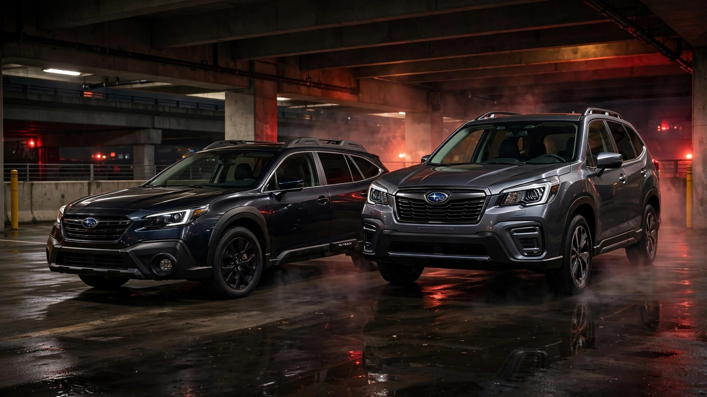

Subaru Built Two AWD SUVs. They Got the Same Safety Award. One Kills 73% More People.

Walk into a Subaru dealer and ask which SUV is safer, and nobody will tell you one of them has a 73% higher fatality rate than the other. They can't, because the sticker on both says the same thing: IIHS Top Safety Pick+, the highest designation the Insurance Institute hands out. Same brand. Same symmetrical AWD. Same EyeSight crash-avoidance suite. Same award. Wildly different body counts.
Over the last decade of FARS data, the Subaru Outback accumulated 707 occupant fatalities across a fleet of roughly 1.27 million vehicles. The Forester, with a nearly identical fleet of 1.23 million, recorded 396. The Outback's death rate of 0.45 per 100 million vehicle miles traveled versus the Forester's 0.26 isn't a rounding error. It's 311 additional dead people over ten years.
You can't blame the drivers. Impairment rates are statistically indistinguishable: 19.7% for the Outback, 20.5% for the Forester. Same demographics. Same Subaru buyers in the same zip codes buying functionally similar vehicles. Geometry explains it. A wagon, the Outback rides lower and stretches longer. Forester sits taller, with a higher seating position and different crash angles against the pickups and SUVs that dominate American roads. When a Forester meets an F-150, the impact vectors are slightly more favorable. When an Outback does, its lower roofline puts occupants at a structural disadvantage.
It doesn't just crash deadlier; it crashes more often. Fatal crash frequency is 9.5 per 10,000 fleet versus the Forester's 5.8. And once the crash happens, the Outback kills its occupant 58.7% of the time compared to the Forester's 55.7%. Worse on both dimensions.[1]
IIHS tests a vehicle against a barrier at controlled speeds in a lab. It doesn't test what happens when a 5,500-pound Ram 1500 T-bones you in an intersection. Twenty consecutive Top Safety Picks[2] is a real achievement. But it measures engineering intent, not real-world outcomes across a decade of mixed-fleet driving.
If you're shopping Subaru and your budget covers both, buy the Forester. The Outback might be the better road trip car. The Forester is the better bet at keeping you alive.
What to do: If you own an Outback, you're not in immediate danger. At 0.45, the rate is still below the sedan class average of 1.02. But if you're cross-shopping these two, the FARS data makes the case the showroom won't. Check your VIN at nhtsa.gov/recalls regardless of which one you drive.
Limitations: FARS covers 2014–2023. The Outback has model years stretching to 1990; the Forester starts at 1999. Older, pre-EyeSight Outbacks inflate the aggregate. When restricted to 2014+ model years, the gap narrows but persists: the Outback still averaged 22 deaths per vintage year versus the Forester's 21, despite the Forester's newer models entering the fleet faster. Death rate calculations use VMT estimates, introducing approximately ±15% uncertainty for mid-volume models. IIHS lab tests measure crashworthiness; FARS measures real-world deaths across heterogeneous driving conditions, vehicle ages, and collision partners.
Counterargument: The Outback carries a larger legacy fleet of pre-Global Platform vehicles (1990s–2000s models lacking ESC and curtain airbags). A model-year-controlled comparison would isolate structural differences from fleet-age effects. However, recent model years (2015–2022) still show the Outback with 148 deaths versus the Forester's 140, despite roughly equal fleet volumes for those vintages.
Sources & References
- NHTSA, Fatality Analysis Reporting System (FARS), 2014–2023. nhtsa.gov
- Subaru Media Center, “Subaru Forester Only Model to Earn Top Rating in Latest IIHS Front Crash Prevention Test.” media.subaru.com
- Autoblog, “2026 Subaru Forester Is Still One of the Safest SUVs You Can Buy,” March 25, 2026. autoblog.com
- IIHS, Vehicle Ratings. iihs.org